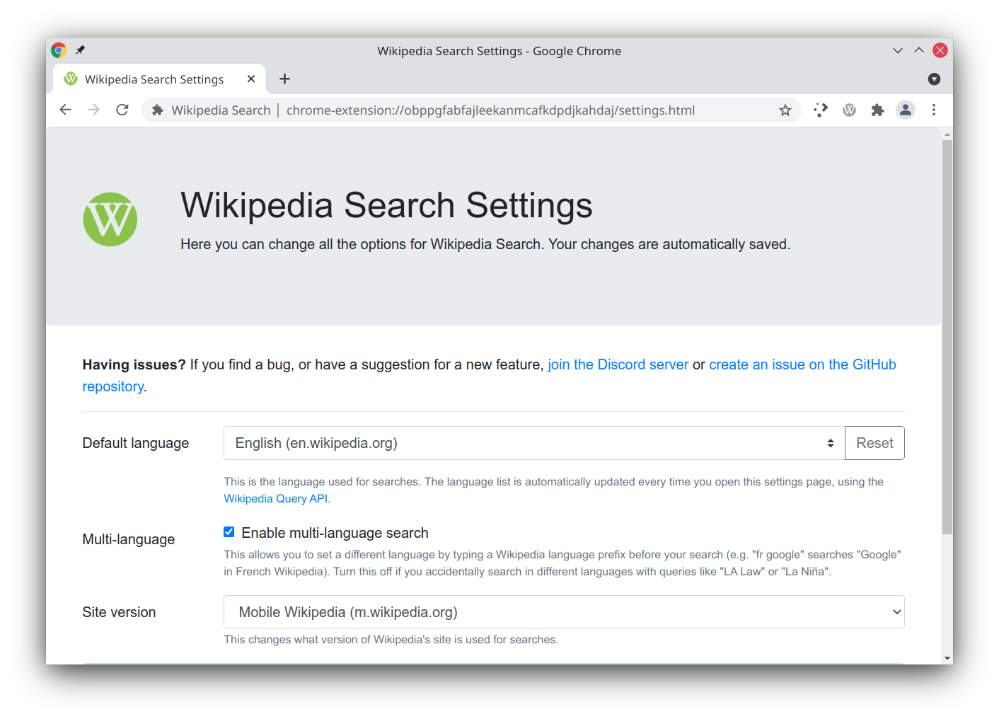
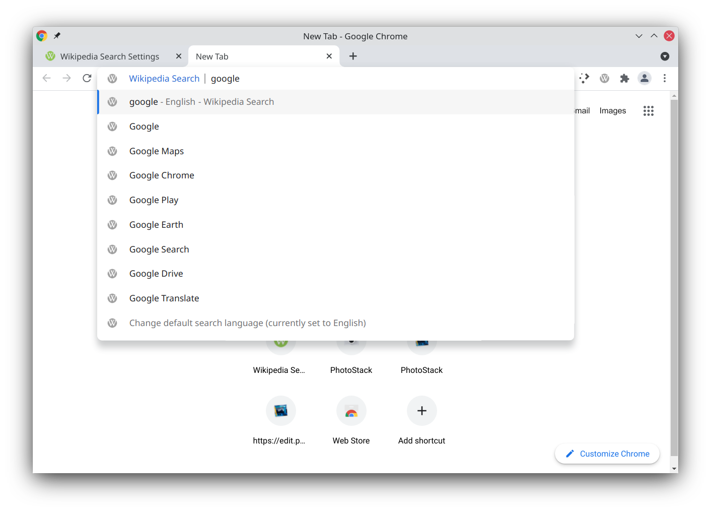

Wikipedia Search is my extension for Chrome (and previously Opera) that adds advanced Wikipedia search capabilities to the browser. It’s my longest-running software project, now over 10 years old, and it’s been over a year since the last update. I’ve now finished Wikipedia Search v10.1, which is now rolling out to Chrome (and soon Firefox).
This update was mainly focused on fixing bugs and overhauling some older code. It now has the same design for the welcome and settings pages as my other extensions, with an updated Bootstrap framework.

This update also adds two new settings, both of which were requested by users. The multi-language functionality, which allows you to quickly change languages from the search bar, can now be turned off. You can also switch between the mobile and desktop Wikipedia sites.

There’s more underlying work that I’d like to do, especially with the years-old code that interacts with Wikipedia’s search APIs, but that can come later. The update is already rolling out to Chrome users, and once I finish updated screenshots, I plan to publish it on Firefox.